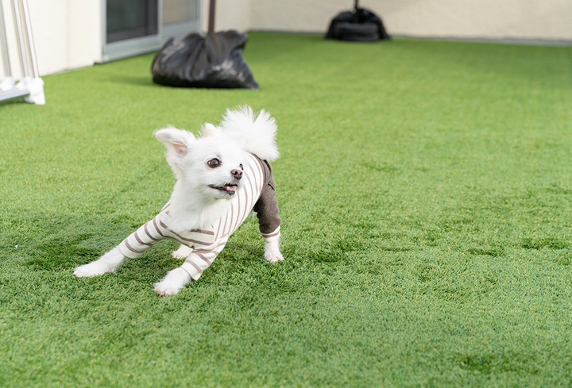
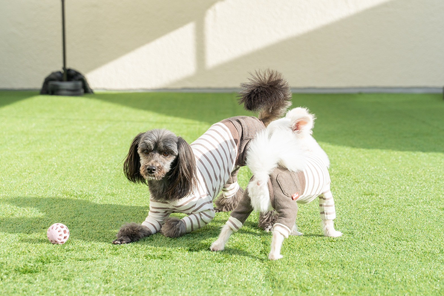

広々とした人工芝のドッグラン
Rururu Forest Café のドッグランは、愛犬が思いっきり走り回れるように、
ふかふかの人工芝と広いスペースをご用意しています。
カフェご利用のお客様は無料でお使いいただけます。



ドッグランご利用ルール
- ・ワクチン・狂犬病予防接種を済ませているわんちゃんのみ利用可能です。
- ・他のわんちゃんとのトラブル防止のため、攻撃的な行動が見られた場合はご利用をお控えください。
- ・飼い主様は必ず目を離さず見守りをお願いします。
- ・うんちは必ずお持ち帰りいただくか、指定のゴミ箱へ捨ててください。